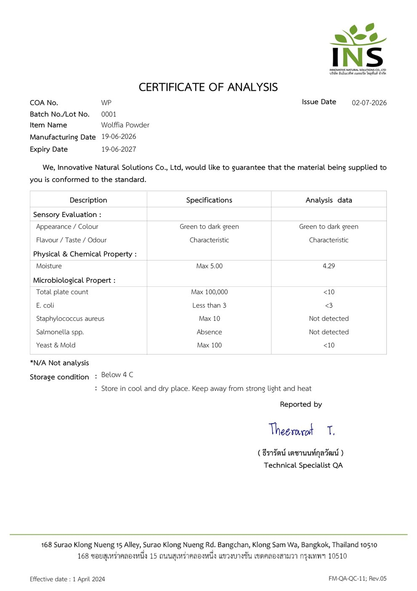

ทุกข้อด้านล่างมาจากผลตรวจแล็บหรือเอกสารที่แนบไว้ในหน้านี้ กดดูฉบับเต็มได้ทุกฉบับ

assets/images/wolffia-closeup.jpg

assets/images/cert-ecoli.jpg

assets/images/hero-2.jpg
แนบเอกสารจริงครบทั้ง 3 ฉบับ — หนังสือรับรองวีแกน COA ผงไข่ผำ และผลวิเคราะห์จาก ALS กดที่ภาพเพื่อดูแบบขยายได้ทุกฉบับ ผู้ซื้อเชิงธุรกิจขอเอกสารฉบับเต็มได้โดยตรง

assets/images/cert-vegan.jpg
assets/images/cert-ecoli.jpg

assets/images/cert-b12.jpg
ในคลิปนี้เราถือใบรับรองตัวจริงให้ดูสด ๆ พร้อมอธิบายว่าลูกค้าธุรกิจจะได้รับเอกสารชุดไหนบ้างเมื่อสั่งซื้อกับเรา — ระหว่างที่เรากำลังทยอยแนบไฟล์สแกนเข้ามาในหน้านี้
หมายเหตุ: รูปใบรับรองและชื่อหน่วยงานผู้ออกจะอัปเดตทันทีที่ได้รับไฟล์ — ระหว่างนี้สามารถขอเอกสารได้โดยตรงผ่านหน้าติดต่อเรา
เราส่งตัวอย่างผงไข่ผำอบแห้งของเราไปตรวจกับ ALS ห้องปฏิบัติการที่ได้รับการรับรอง ISO/IEC 17025 ผลที่ได้คือในผง 100 กรัม มีวิตามินบี 12 อยู่ 30.8 ไมโครกรัม และมีโปรตีน 40.6 กรัม ตัวเลขทั้งสองมาจากตัวอย่างจริงของฟาร์มเรา ไม่ใช่ค่าอ้างอิงจากงานวิจัยของไข่ผำทั่วไป
E. coli เป็นเชื้อแบคทีเรียที่ใช้เป็นตัวชี้วัดมาตรฐานความสะอาดและสุขอนามัยของอาหารในระดับสากล เราไม่ได้แค่พูดถึงความสะอาด แต่พิสูจน์ให้เห็นอย่างสม่ำเสมอ ไทย ริเวอร์ คาเวียร์ เพาะเลี้ยงไข่ผำในระบบปิดคลีนเทคที่ควบคุมสภาพแวดล้อมได้ตลอดกระบวนการ ลดการปนเปื้อนจากภายนอก จัดส่งตรวจแล็บอย่างครอบคลุมทุกเดือน ค่าเชื้อ E. coli ของเราถูกควบคุมอย่างเข้มงวดและได้รับการรับรองว่าไม่เกินมาตรฐาน ทุกรอบผลิต การันตีวัตถุดิบที่สะอาดขั้นสุดและปลอดภัยสม่ำเสมอสำหรับแบรนด์ที่ต้องการวัตถุดิบไว้วางใจได้
เพาะเลี้ยงในระบบปิดที่ควบคุมความสะอาดตลอดกระบวนการ และตรวจแล็บทุกเดือน ยืนยันว่าค่าเชื้อ E. coli ไม่เกินมาตรฐาน ในทุกรอบผลิต เหมาะสำหรับแบรนด์ที่ต้องการวัตถุดิบสะอาดปลอดภัยตามมาตรฐานสากล
วัตถุดิบของเราไม่มีส่วนผสมจากสัตว์ในทุกขั้นตอนการผลิต เปิดกว้างสำหรับตลาดผู้บริโภคหลากหลายกลุ่มทั่วโลก
กระบวนการผลิตของเราผ่านเกณฑ์ที่จำเป็นสำหรับการส่งออกไปยังตลาดญี่ปุ่นและสหรัฐอเมริกา ซึ่งขึ้นชื่อว่ามีข้อกำหนดด้านคุณภาพและความปลอดภัยที่เข้มงวดที่สุดในโลก
เราไม่ได้ส่งมอบแค่วัตถุดิบ แต่ส่งเอกสารที่ทีมจัดซื้อและฝ่ายควบคุมคุณภาพของคุณต้องใช้ไปด้วยครบทุกฉบับ
เราส่งตัวอย่างไข่ผำ 20 กรัมให้ลูกค้าธุรกิจฟรี เพื่อให้คุณนำไปตรวจกับแล็บที่คุณเลือกเองได้ ไม่ต้องเชื่อเราฝ่ายเดียว — พิสูจน์ด้วยตัวคุณเองได้เลย